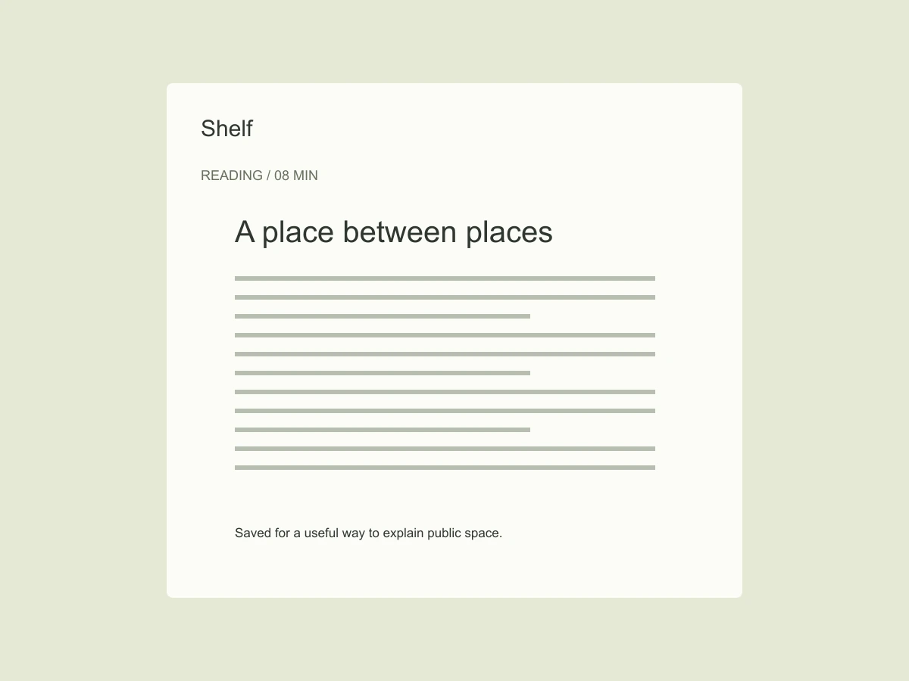

Reading tools / 2026
Shelf — A quieter place to keep what you read.
Shelf is a self-initiated study of a familiar problem: saving an article is easy; finding the reason you saved it is harder. I designed a small reading space around that missing context, rather than another endless wall of bookmarks.

What if a saved link remembered your intention?
The starting collection contained essays, recipes, references and half-read interviews. Sorting these by publication date made the archive tidy, but not useful. The important distinction was between something to read, something to use and something to return to. Those are different promises to a future self.
The decision
I replaced folder selection at the moment of saving with one optional sentence: “Keep this because…” The sentence stays visible beside the title. It can be changed later without opening a separate metadata panel. Collections still exist, but they become a secondary way of looking rather than a compulsory filing task.
A small interaction / compare the language
Following the detail
The reading view removes the archive navigation and gives the text a consistent measure. A small return link retains the collection context. Highlights use a quiet underline rather than a large colored block; they do not compete with the original author’s hierarchy. The saved reason appears at the end, when the reader is deciding what to do next.

The tradeoff
A free-text reason is slower than a single tap. I kept it optional and left the save action immediately available. This study does not claim that every saved item needs explanation. It asks whether a little context helps the important items survive a large collection.
What I would test next
The most useful change was not a new navigation pattern. It was admitting that “saved” describes an action, not an intention. I would next test how often people return to their own notes after a month, and whether those notes still explain the original interest.